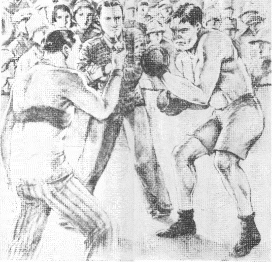

| 小指一本の大試合 | |
| 山中 峯太郎 | |
| 青空文庫 (2017) | |
小指一本の大試合
山中峯太郎
「きみ！ ブルはなまいきじゃないか？」と、一人
が小声で、ささやくと、
「そうだよ、ブルはなまいきだとも！ あんなにいばる男は、世界じゅうにないぜ」と、別の一人が答える。しかし、これも小声だ。
みんなが「ブルはなまいきだ」という。けれど、大きな声でいうものは一人
もない。ブルにきこえたら、それこそ、どんな目にあわされるかしれないからだ。なにしろブルは強い。すごく強いんだ。拳闘
の第一選手だし、おまけに、非常ならんぼうものだ。だれ一人、ブルにかなうものはない。
「来たよ来たよ、だまって！」
ブルがくると、だれもだまってしまう。うっかりして、相手になると、すぐにらんぼうされるからだ。それほど、みんながブルを、こわがってる。ガンと一つ顔でもなぐられたら、頰
が五日
もいたんで、一きれのパンも、かめなくなる。スープばかり吸
っていなければならない、という評判
なのだ。
そんな評判が、ほんとうだろうか？ しかし、ブルの顔とからだつきを見ると、だれでも「なるほど」と思わずにいられない。――犬に「ブルドッグ」というのがいる。からだの幅
がひろくて、骨組
みが太い。肉という肉がはりきってる。頭が大きくてまるい。鼻は低くて上を向いてる。下のあごが上のあごよりつき出ていて、口がひらべったく大きい。かみついたとなったら、死んでもはなさない。すごい猛犬
だ。この猛犬の「ブルドッグ」と、いまみんなが「なまいき」だというブルとは、顔も、からだつきも、かみついたら、死んでもはなさないというすごい性質まで、そっくり似てるんだ。いや、似てるから「ブル」とあだ名をつけたのだ。ほんとうの名前は「ポール」だ。けれど、だれも、「ポール」なんて、やさしい呼
び方
をするものは、一人
もいない。かげで「ブル」「ブル」という。そのブルと顔を見合わせたときは、ソッとだまってしまう。
すると、ブルは、みんながだまって、相手にしなくなったから、二、三日前から一人でおこってる。おこっても、相手がないから、けんかができない。そこで、洗濯代
をはらわずにいるのだ。すると、洗濯屋のジョージが、さいそくにきた。このジョージも強い。牧場で牛があばれだしたとき、走っていってとりおさえたのは、ジョージの力だ。
「ポールさん、洗濯代をはらってください」と、ジョージがきていうと、
「なに？」ブルが下あごをつき出して、ニヤリとわらった。
さあブルのらんぼうがはじまるぞ！ と、みんなが青くなった。ちょうど食堂にいたときだ。中には焼き肉を半分、食いかけたままで、コソコソと逃
げだしたものもいる。ぼくは、このとき、すみの方で、ジャガイモを食いかけていた。
「なにって、前の月の洗濯代
が、まだいただかずにあるんです。ぼくが主人にさいそくされて、こまってるんですから、どうかおはらいください、ポールさん」と、ジョージがブルに、ていねいにいってる。
「ハッハッハッ」と、ブルが、わらったかと思うと、いきなりどなりだした。
「ヤイ、ジョージ！ きさまはおれに、恥
をかかせたな、みんなの前で、さいそくなんかしやがって、こい！ もすこし前へこい！」
「いや、恥をかかせるなんて、そんなことが、あるもんですか。みんなの前でとおっしゃっても、ここの俱楽部
の方ばかりで、みなさんは仲
のいい兄弟のような方じゃありませんか」と、ジョージが、やさしくいうと、
「だまれッ！ なにが兄弟だ。きさままでおれに反対するかッ」
と、いきなりブルが立ち上がった、と思うと、ジョージにとびかかっていった。ジョージもおこった。ものもいわずにブルへ打ってかかる。打たれてブルはすごく顔色をかえた。と見るまに組みついた。大げんか、大格闘
になった。みんながバラバラと逃
げだした。けんかをとめたりしたら、あとで、「ヤイ、なぜとめた。おれの勝つけんかを、なぜとめた」と、ブルがくってかかる。しかし、だまって見てたら、
「きさま、なぜ見てた。なぜ加勢しなかった」と、やはりおこってくる。もしも加勢したら、「オイ、おれが弱いと思ったのか。さあこい、きさまが相手だ」と、どうしてもつっかかってくる。それを知ってるから、みんなが逃げだしてしまって、ぼくばかりのこった。ジャガイモを食いながら、目の前の大格闘を見てると、
「エイッ！」すごい気合いとともに、ブルが、ジョージのからだを、つり上げた、と思うと、
「ウッ」ジョージが、ブルに、しがみついた。
「な、なにをッ！」
と、すごい力をからだ中にこめたブル、いきなり、ジョージを肩
の上までグッとさしあげると、そのまま下へ力いっぱい投げつけた。
「ウーン」と、いったきり、さすがのジョージも、床
の上にひらたくなったまま、肩で息をしてる。起きられないのだ。
ブルは、息もつかずに、ぼくの方を、ジロリと見て、
「どうだ？ おれに手向かいするやつは、ヘッ、こんなものだぞ！」
と、いうと、廊下
の方へ、ノソリノソリと出ていった。どうしたのか、ぼくにくってかからない。――ハハア、ブルのやつ、ぼくが日本人だから、すこしはこわがってるんかな？ と、そう思いながら、ぼくはジョージの倒
れてるところへいって、だきおこしてやった。
ブルは、牛より強いジョージに勝ってから、いよいよらんぼうになった。洗濯代
ばかりでなく、俱楽部
の代金まで、まるではらわなくなった。この俱楽部
というのは、学生の寄宿舎なのだ。名前を「ラサハ俱楽部
」という。「ラサハ」というのは、ギリシャのことばで、「友だちの愛」という意味だ。ところが、ブル一人
のらんぼうで、みんながビクビクしてる。「友だちの愛」が、ブルのために、やぶれてるのだ。このみんなは、カリフォルニヤ大学の学生で、その大学は、米国
の大都会サンフランシスコにある。ぼくは、和歌山中学
を卒業してから、このカリフォルニヤ大学へはいって、そして、ラサハ俱楽部
に、寄宿してたのだ。日本人はぼくばかり、ほかはみんな、米国人だ。ブルを合わせて四十八人、そのほかに、フランクという俱楽部長
がいた。このフランクが、ぼくの部屋
へきて、ほんとうにこまってる顔をしながら、
「内村
君、ブルが下宿代をはらわないんだ。しかし、追い出すといったりしたら、それこそたいへんだしね。どうしたものだろう？」と、相談しだした。
「さあ、拳闘
の第一選手だというんだから、いばらしておくさ」と、ぼくは、ブルなんかなんとも思ってない。すると、
「ただいばるだけならいいが、ブルがいるので、俱楽部
を出ていくものもあるしね、なんとかならないものだろうか？」と、俱楽部長
フランクが小声でいう。
「なんとかならないものかって、どうするんだ？」と、きいてみると、
「きみはこの前、ブルが洗濯屋
のジョージを、たたきつけたときに、一人
でジャガイモを食ってたそうだね、ほんとうかい？」と、また、たずねる。
「ウン、食ってたよ、うまかった」
「フウム、すると、ほんとうだね。それがみんなの評判
になってるんだが、きみは、いったい、ブルがこわかないのかい」
「べつにこわかないね」
「ホウ、すると、どうだろう？ きみとブルと試合したら、どっちが勝つと思うね？ 内村君
」
「それあ、やってみないとわからないさ。しかし、まず負けることはあるまいね」
「エッ、きみ、すると、勝てるつもりかい、ほんとうに？」
「そうさ、日本人は勝つといったら勝つよ」
「フウム、やはり、拳闘
でやるかい？ 試合となったら」
「なあに、拳闘なんか、いらないだろう。ブルが相手なら。そうだね、まず、小指一本さ」
「エエッ？ 小、小指、一本？ きみ、それあ、まったくかい？ 小指一本？」
と、うっかり「小指一本」とぼくがいったのを、俱楽部長
のフランクは、びっくりしてしまって、自分の小指を出して見せながら、
「こ、これで、きみ、ブルに勝つというのかい？」と、目をみはって、真剣
にたずねる。
さあぼくは弱った。フランクの真剣な顔を見ると、「いまいったのはちがうよ、うそだよ、冗談
だよ」ともいえなくなってしまった。しかたがないから思いきって、
「ウン、まず小指一本、......で、いいだろう」と、いうと、
「ありがたいッ！ 実にありがたい！」と、フランクが、いきなり立ち上がった。と思うと、
「きみはラサハ俱楽部
の救い主だ！」と、大声でさけびだしながら、部屋
を出ていってしまった。
これからがたいへんだ。フランクが俱楽部
じゅうのものに、「内村
は小指一本でポールに勝つといってる」と話したらしい。すぐにポールのブルがききつけて、カンカンにおこったのだ。いきなり、拳闘試合
をぼくに申し込んできた。どうもしかたがない。「よろしい。やろう！」とぼくもすぐに返事した。すると、この試合の評判
が、大学じゅうにひろがってしまった。大学でもポールの別の名はブルだ。そこで、
「ブルを小指一本で、日本人の内村
が、投げとばすそうだ」という大評判なのだ。小指のことを、英語で「赤ん坊の指
」という。大きな牛のようなブルを、赤
ん坊
の指一本でなげとばすというんだから、この大評判が、とうとう、新聞にまで出てしまった。いよいよ、大さわぎになって、ミス・ネールという金持ちのお嬢
さんは、この試合に二十万円の懸賞
を出すと、これまた新聞に書かせてしまった。なにしろブルは、拳闘
の第一選手だ。いままでにも名前が知れてる。そのブルと赤
ん坊
の指一本の試合だ。そこへ二十万円の懸賞！ さあもう、たいへんな人気だ。
ところが、ぼくは一時に有名になってしまって、なお弱った。和歌山中学
で関口流
の柔道
を、初段
くらいまでおそわったのだ。だから、ブルをこわがりもしないし、試合したって、三回が三回とも負けるとは思わない。が、しかし、なにしろ「小指一本」には、どうしたらいいか、自分でもわからないんだ。俱楽部長
のフランクに、ふと冗談
にいったのを、とても後悔
したが、もういまのような大評判になっては、追いつかない。食堂へいくたびに、ブルはブルで、ぼくの小指ばかり、にらんでる。みんなはまた、ブルのいないところで、
「内村
君、きみの赤ん坊の指
を大事にしたまえよ！」と、本気になっていう。
新聞記者がまいにち、写真機を持ってきて、
「内村君の赤ん坊の指
をうつさしてくれ」と、たのみにくる。日本の柔道
には、小指一本で勝つ術があるのだと、みんなが信じてるのだ。
写真はもちろん、うつさせなかった。が、ぼくは気が気でない。しかし、弱った顔は見せられない。心の中
で大弱りに弱ってると、いよいよ試合の日になった。俱楽部
のテニスコートが、この日の試合場だ。審判官
は一人
ときめてフランクがなる。ところが、朝、夜の明けないうちから見物人がくるわくるわ、巡査
が交通のとりしまりに十六人もかけつけてきたというさわぎだ。どうもしかたがない。
――ブルとぼくの小指一本の試合だ！
ブルは牛みたいなからだに、拳闘
のしたくをかためて、堂々とあらわれた。ぼくは背広服
の上着
をぬいだきりだ。柔道
の稽古着
も持ってないし、わざと平気な顔をして出ていくと、
「ワーッ」と、四方の見物席はたいへんなさわぎだ。そこでブルとぼくが両方にはなれて立った。
審判官
のフランクが、時計
を見ながら、
「はじめ！」と、ふるえ声でいった。第一回の勝負は三分できめるんだ。
見ると、ブル、今日
はまた一だんとすごい顔をしかめて、両手を前につき出しながら、ジリジリ、ジリジリとよってくる。――きたナ！ と、ぼくも身がまえながら、ヒョイと顔の前に左の小指を出してふった。すると、
「ワアーッ！ ワア――」と、何千人という見物人が声をあげて、パチパチと手をたたくひびきが雷
のようだ。

ブルがまっかになった。ぼくの小指を、にらみながら、目が血ばしってる。ぼくはヒクヒクとまた小指をふって見せた。ブルがまっさおになってきた。小指一本が、どんな術があるのかと、気味がわるいらしい。一メートルほど前から近よってこない。両腕
を上下につき出して、顔を低くして、一生けんめいに、ぼくの小指を、にらんでる。そのまま身うごきもしない。こうなると、ぼくは急に愉快になってきた。ふいに、
「こい
！」と、小指をヒクヒクふると、
「............」ブルが顔をしかめて、ビクッとする。
「ワアーッ」と、見物人はますます声をあげる。
「こい
！」
「............」ブル、まっさおだ。汗
をながしてる。
「ワアーッ」バチバチバチバチ。「ワアーッ」
「こい
！」ヒクヒク。
「............」ブル、まったく汗だらけだ。
「あと二十秒！」フランクがいう。
「............」ブル、また赤くなってきた。
「こい
！」ヒクヒクヒク。
「............」ブル、目がすわってきた。
「あと十秒！ ......五秒！ ......」
フランクのことばとともに、そのとき、サッとブルが小指へとびかかってきた、眼
にもとまらぬ電光石火、ハッと身をしずめたぼく、頭の上にブルの腕
と胸
がのびてるやつを、そのままの背負
いなげ！ 敵の力で敵をなげる柔道
の、これこそ術だ、みごとにきまって、
「エエイッ！」
ブルのでかいからだがかるくて紙一枚のようだ、とびかかってきた自分の力でさかおとしに、ドスーンとむこうへ宙返
りを打った、と、ぼくはヒラリと左の小指を上げた。
見物人が総立ちになった、さあたいへんだ！ ツンボになるような「ワアーッ、ワワワワワ――」という声が、ぼくの小指一本にあつまってる。フランクもボンヤリしてる。ところが、見ると、ブルが倒
れたままだ。テニスコートのかたいコンクリートの上へ、背負いなげでたたきつけられて、長くなってる。いってみると、目をまわしてるんだ。そこでぼくがうつむいて、手をのばすと、見物人がシーンとしずまった。――よし！ と、ぼくは考えて、ブルの腹
の上へ、うつむいた。柔道には「腹活
」という手がある。腹へ活を入れて、目をまわしてる相手の息をふきかえさせる、これまた術だ。ぼくは、ブルの腹へ、右手で、
「エイッ！」と、活を入れて、左の小指をスッと上げた、そしてヒクヒク動かしてるうちに、
「ウウーン」ブルが、うなると、ムクムク起きあがった、が、ぼくの顔と小指を見ると、おそろしそうに顔色をかえた。
「どうだ？ ポール！」と、いうと、
「............」ブルのポールが、ふるえながら、ぼくの右手をにぎりしめて頭を下げた。
見物人がみんな四方からワアーッとおりて走ってきた。
あとはいわなくてもいいだろう。ポールはおとなしくなって、ラサハ俱楽部
は「友だちの愛」でさかんになるし、俱楽部長フランクは大よろこびさ。なに？ 懸賞
の二十万円なんか、だれがもらうものか、ミス・ネールにソックリ返してやったよ。
（昭和六年一月号）
底本：「少年俱楽部名作選3
少年詩・童謡ほか」講談社
１９６６（昭和41
）年12
月17
日発行
底本の親本：「少年俱楽部」講談社
１９３１（昭和6
）年1
月号
初出：「少年俱楽部」講談社
１９３１（昭和6
）年1
月号
※嶺田弘（１９００（明治33
）年2
月1
日～１９６５（昭和40
）年9
月28
日）の挿絵を同梱しました。
入力：sogo
校正：雪森
２０１７年1
月1
日作成
２０１７年1
月1
日修正
青空文庫作成ファイル：
このファイルは、インターネットの図書館、青空文庫（http://www.aozora.gr.jp/）で作られました。入力、校正、制作にあたったのは、ボランティアの皆さんです。